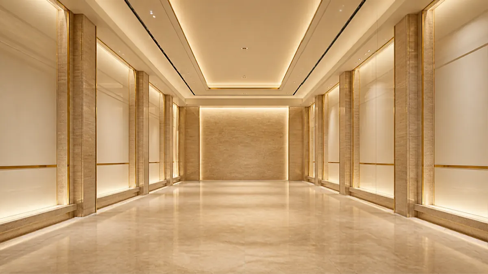
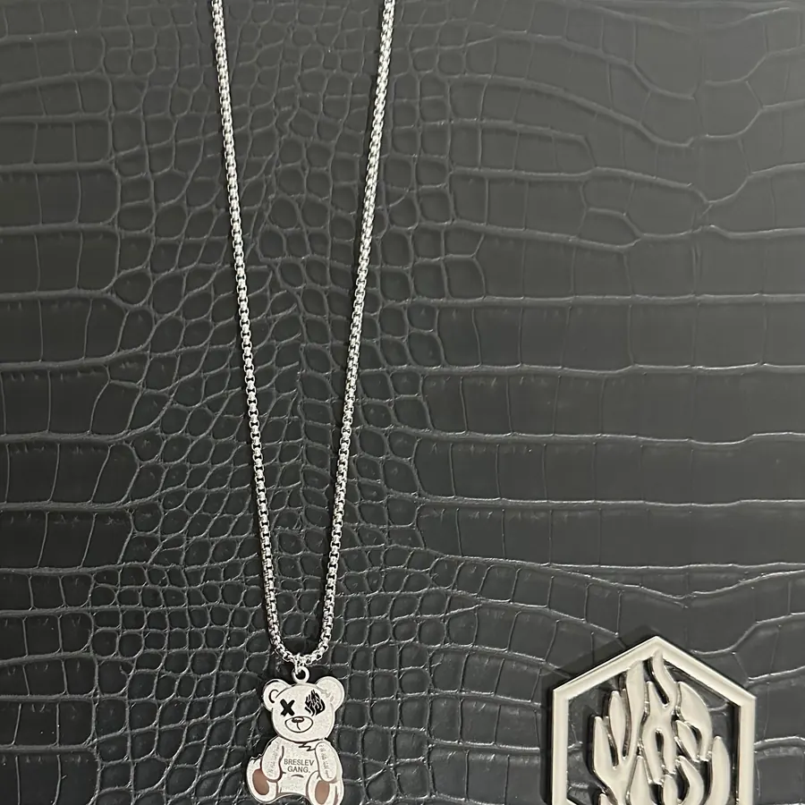
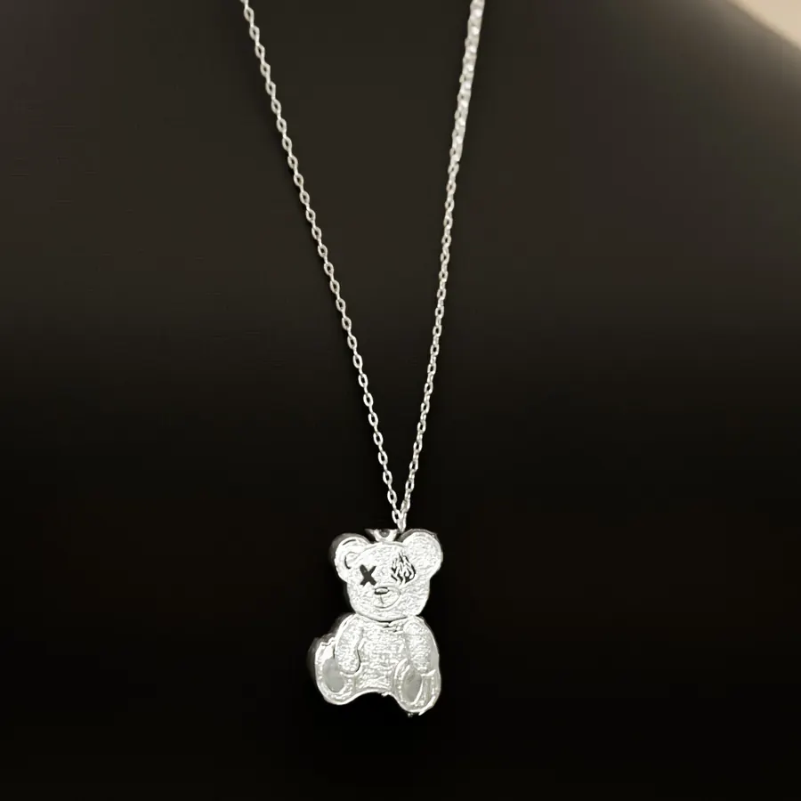
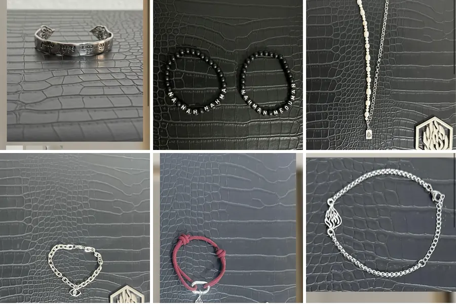
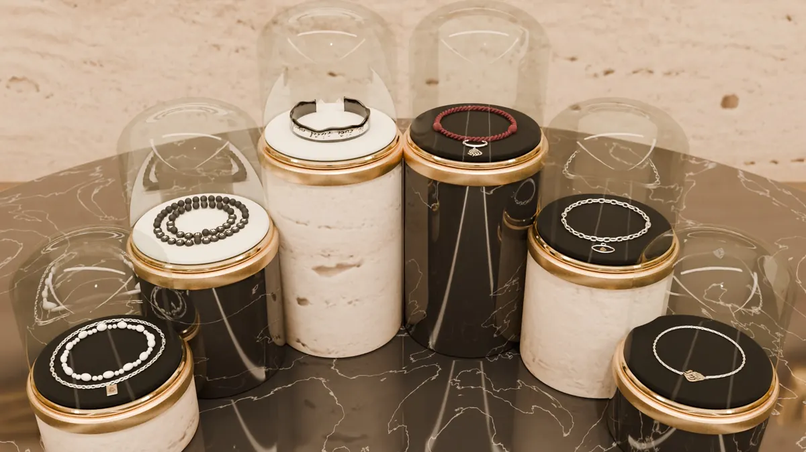
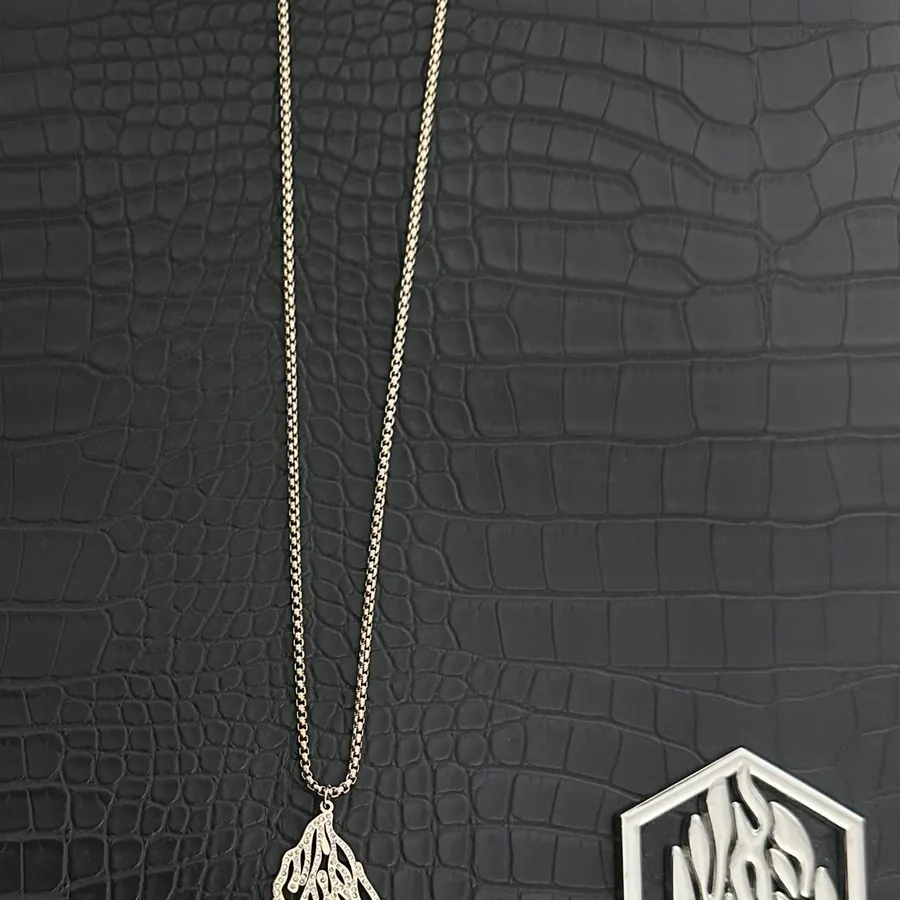
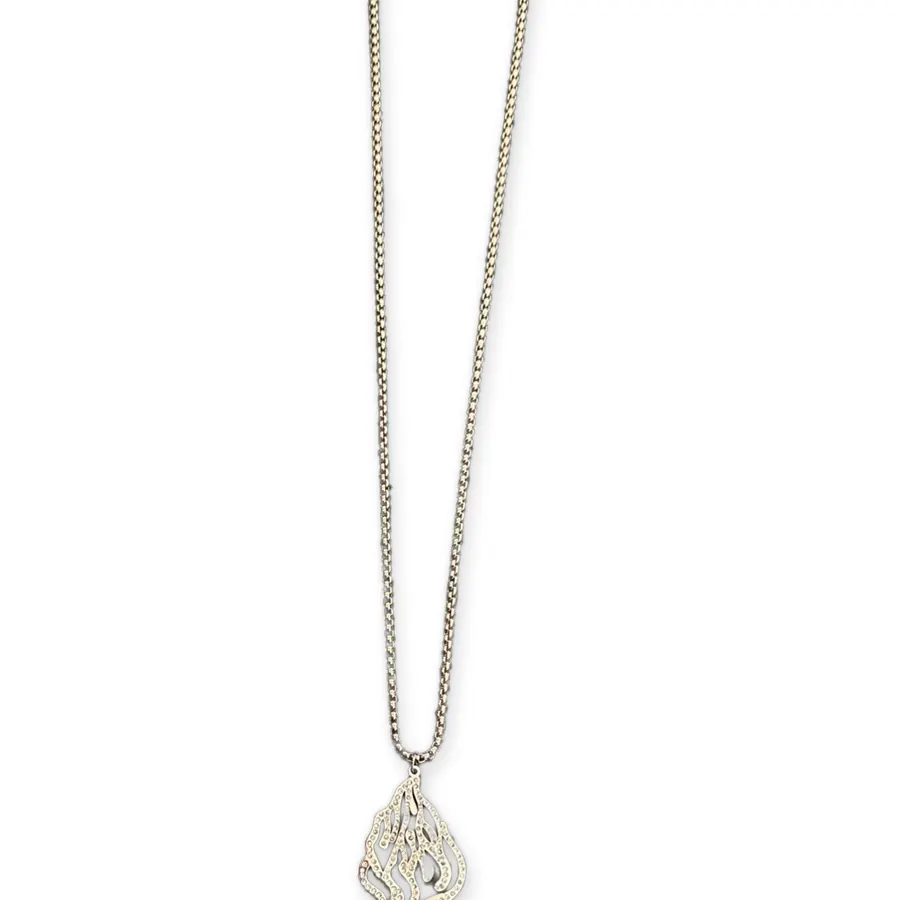
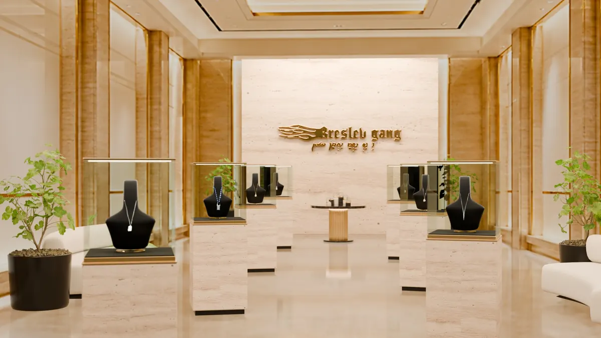
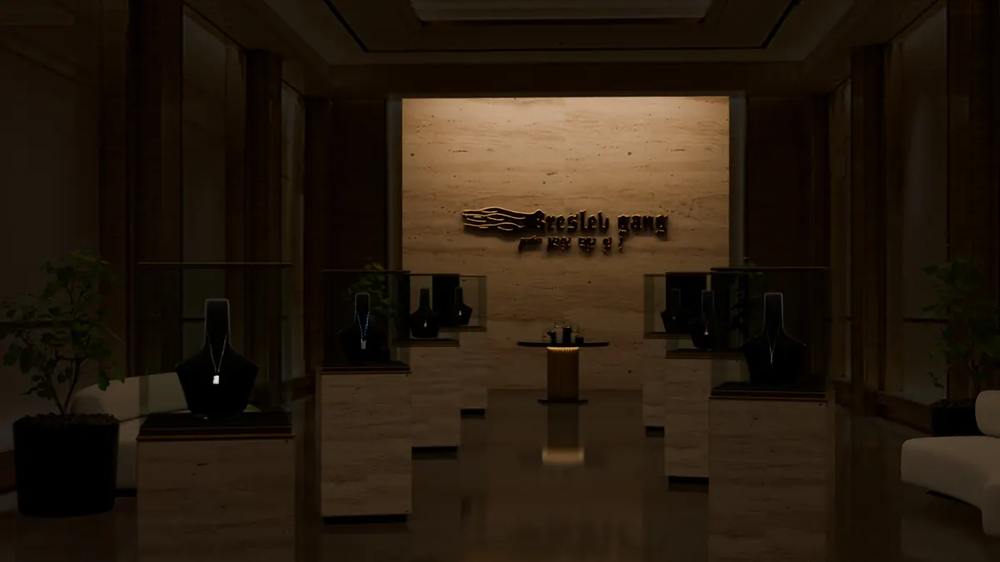

Coulisses
La boutique de la démo : une salle, sept vitrines, une table de bracelets, chaque bijou refait d'après sa photo. Entrer dans la boutique.
La salle
Une image de boutique, créée avec Canva, est projetée sur le volume 3D de la pièce ; vitrines, bustes, meubles et bijoux sont en vraie 3D devant elle.


Les bijoux
Chaque pendentif est relevé sur sa photo : contour, jours, émail et gravure ; puis viennent l'épaisseur, les arêtes et le métal poli.


La table des bracelets
Six bracelets de la marque, couchés comme sur leurs photos, chacun sous sa cloche de verre.


Les photos
Le fond croco et la plaque disparaissent ; les pixels du bijou restent ceux de la photo.


La boutique éteinte
Le bouton Noir du site éteint la salle : il ne reste que les vitrines, la table et le logo.

